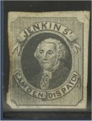
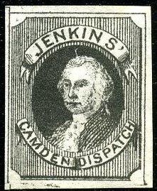
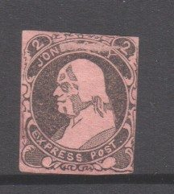
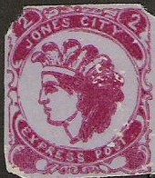
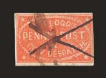
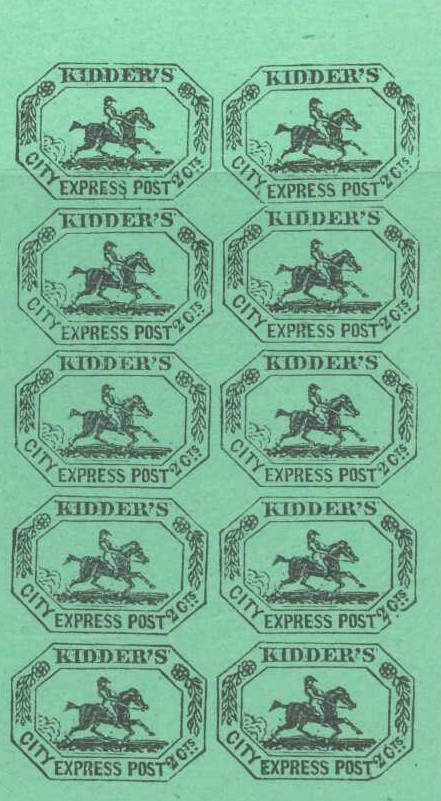
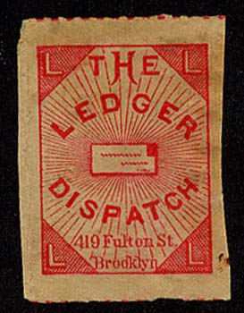
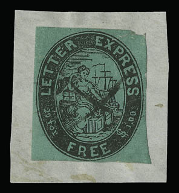
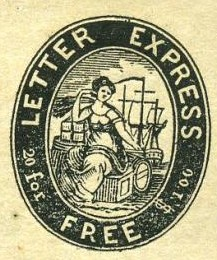
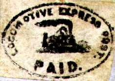

Return To Catalogue - United States locals overview - Hampton to Jefferson Market - Hussey's local issues - United States
Note: on my website many of the
pictures can not be seen! They are of course present in the cd's;
contact me if you want to purchase the catalogue.
1853 portrait of Washington

This stamp exists in red, blue, black, green and violet, however only this stamp in black and black on yellow were issued in 1853 in Camden N.Y. There seem to be several types. Other colours are probably reprints.
Reprints made in 1943.
Other colors.
(Forgery or reprint)

Hussey's 'reprint' of a Jenkins'
Camden Dispatch
A primitive forgery
Probably a Taylor forgery
I've seen another rather primitive forgery (made by Taylor?), which has a rather white head and different lettering (for example, the "J" of "JENKINS" is very squeezed).
Another stamp was issued with the inscription "JENKIN'S One Cent DESPATCH", the status of this stamp is not yet determined. Example of this stamp:
(Reduced size, image obtained from a Siegel auction)
This stamp is black, it was issued in 1848 in Baltimore, only two stamps are known to have survived.
(Image obtained from a Siegel auction)
(Genuine, reduced size, image obtained from a Siegel auction)
Issued in1845 in the colour black on lilac. Forgeries exist, example:
(Forgeries)
I've been told that the next stamp is a bogus issues made by Scott, it has the inscription "JONES CITY EXPRESS POST" and the head of Washington, the value is 2 c black on lilac:

There exists another bogus design, resembling the above Scott forgery, but with the head of an Indian in the center. The text reads "JONES CITY EXPRESS POST". I've been told it was made by the forger Taylor. I've only seen the values 2 c red on blue, 2 c black on yellow and 2 c red on grey. On the 2 c black on yellow forgery, the head of the Indian is tilted more backwards.


There are even different types, in this type the head of the
person is tilting more backwards.

(Genuine, image obtained from a Siegel auction)
A red stamp with inscription "Kellogg's Penny Post City Despatch" was issued in 1853.
(Genuine, image obtained from a Siegel auction)
The only stamp issued was a black on blue stamp in 1847, with a manuscript 'IS' control mark. Hussey made reprints of these stamps, which were sold by Scott. The reprints were printed in sheets of 10 (5 x 2) and have constant flaws and can thus be recognized. Reprints were also made by new owner G. H. Snedeker just after 1851 when he purchased this local post from H.A.Kidder (the reprints were done in various colours on green paper).

The Hussey reprints are always in black on green
and are quite common. Main distinguishing characteristics of the
10 reprints (see image above)
Position 1 (top left of the sheet): Second 'S' of 'EXPRESS' is
connected to bottom frameline. Some typical blotches in the word
'KIDDER'S'
Position 2 (top right of the sheet): Frameline at top right
partly missing (nex to the flower).
Position 3 (second row, left stamp): Frameline above 'R' of
'KIDDER' broken.
Position 4 (second row, right stamp): Upper frameline almost
totally missing. Some breaks can be found in the frameline to the
right of 'CTS'.
Position 5 (third row, left stamp): ?
Position 6 (third row, right stamp): Piece of frame missing next
to right hand side flower.
Position 7 (fourth row, left stamp): Left outer frameline is too
thick.
Position 8 (fourth row, right stamp): Below '2 C' the frameline
is broken. A straight line goes through this '2'.
Position 9 (fifth row, left stamp): ?
Position 10 (fifth row, right stamp): First 'E' of 'EXPRESS'
thick.
This forgery has an inverted 'S' of 'KIDDER'S'. It exists in various colors: black on red, black on lilac, black on blue, black on yellow, red on green, red on orange, red on blue, black. The man on the horse wears a hat instead of a cap.
Similar forgery (man with hat), but with the 'S' corrected.
Possibly made by Benson(?), it also exist in many bogus colors.
The word 'CITY' is too smal on these forgeries, such that the 'Y' of 'CITY' is placed very far from the 'E' of 'EXPRESS'. I've also seen this forgery in the color blue and black on grey.
Another forgery, very closely resembling the second forgery seems to exist (I have never seen it, but it seems to have an inverted 'S' of 'KIDDER'S').
There is a break in the inner frameline above the '2'. The rider is wearing a cap with a very short front part.
This forgery has no dot below the "s" of "Cts", but the "t" of this word does. The "R" of "KIDDER'S" has a long foot. The tail of the horse is rather rounded.
A very rare stamp with inscription "E.H.L. Kurz Union despatch Post Two Cents." exists. It was issued in 1853 in New York, in the colour black on green. Sorry, no picture available yet.

(Genuine)
(Reduced size)
This stamp of 'The Ledger Dispatch' was only issued during a few months in 1882 (according to the Scott specialized catalogue).

(Genuine stamps, reduced sizes, images obtained from a Siegel
auction)
These stamps were issued in 1844, the design with the sitting woman exist in black on lilac and black on green. The design with the man with sword and flag exists in black on lilac or black on red (with slightly different design). The only cancel I have seen consist of a penstroke. Bisected stamps are known to exist. This stamp seems to have been used in a number of cities.
Probably forgeries, note that the design and letters are different from the genuine stamps:
Letter Express Free, forgery?
Scott forgeries of both types of the man
with sword design.
Yet another forgery type.
Forgeries in the wrong colours of the woman design. Possibly made
by Scott or Taylor (Taylor even made two different types of these
stamps).

(I've been told that this stamp is a forgery made by Hussey)
I've seen some forgeries in the woman design, in red, which were made by Sheridan, I was told (sorry, no image available).
Besides the Scott, Taylor, Hussey and Sheridan forgeries of the woman design, another forgery exists made by an unknown forger.
Highly dubious stamp.

Picture obtained from http://alphabetilately.com/US-trains-00.html. Issued in New York 1847, this is actually a handstamped adhesive and is extremely rare according to this website (maybe even unique).
(Genuine, image obtained from a Siegel auction)
Three stamps were issued by the Magic Letter Express: a 1 c, 2 c, 5 c (all in black on brown) in the design of two keys with a lock. These stamps are extremely rare, the 1 c is not even listed in the Scott catalogue (only one copy of the 1 c has been found sofar), of the 2 c also only 1 stamp exist, four stamps of the 5 c value are known to exist. Forgeries exist, example:
(Forgery)
(Image obtained from a Siegel auction)
Only one stamp has been found of the McMillan's Dispatch (see picture above). It has the colour black and was issued in 1855.
{kind=link}
{kind=link}
{kind=link}
{kind=link}
{kind=link}